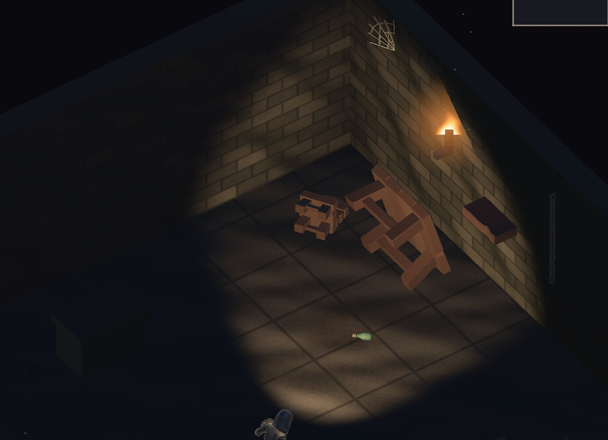
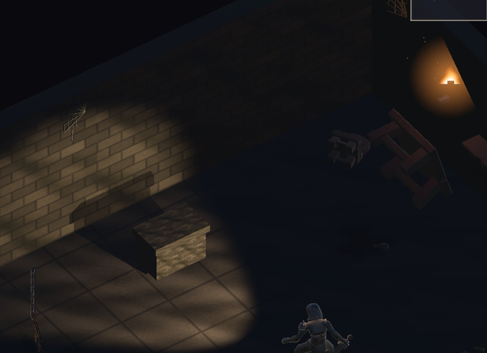

地城迴響 · 髒污強化樣品（一間房）
六層一起做：基底材質的低頻污斑、單一 draw call 的污漬場、牆腳積垢、 散落骨骸、破爛蜘蛛網、光裡的灰塵。41 件全數成功、0 件失敗。

| 原因 | 原本的數值 | 後果 |
|---|---|---|
| 噪聲頻率 | 0.09 / 0.27 / 0.8 | 全是高頻，只有細顆粒，沒有大片髒污 |
| 每塊磚的色偏 | ±7% | 整面牆平均值到處一樣，均勻＝乾淨 |
| 牆面色相 | (.34,.33,.31) | 中性灰，沒有任何有機色偏 |
髒污在視覺上是低頻的——大片不規則暗斑跨過好幾塊磚。 原本每一小塊都一樣髒，等於每一塊都不髒。
低頻噪聲用整數頻率的正弦諧波，不是 Perlin。 Perlin 在貼圖邊界不會接合，而牆與地都要平鋪（牆 2×1.6）， 接縫處會出現污漬突然斷掉的直線。整數頻率的正弦本身就是週期函數，天生無縫。
污垢還會往磚縫與溝縫裡積（乘上 1 − 高度）——
均勻塗一層只會讓牆變暗，不會變髒。

四種變體（裂痕／霉斑／漬痕／水漬）放在一張 2×2 圖集裡，全部併成單一網格。 濃淡與色相的差異改由頂點色承載——為此給貼花 shader 加了頂點色支援。 沒有這個的話，18 張污漬就是 18 個 draw call。
牆腳積垢用了一個取巧：水漬那格是上濃下淡，轉 180 度就變成下濃上淡， 正好是積垢的樣子，不用另外畫一張。
灰塵變成飛濺的火星。第一版讓灰塵共用 glowMat，
而那是火把的橘色 (1, .62, .28)，加法混合下微粒全變橘色亮點。更嚴重的是
它們在黑暗中照樣看得見——正是我在方案裡說要避免的破壞視野錐。
已改用近乎無彩的淡灰專用材質、alpha 壓到 0.10、數量 40 → 22、範圍收緊。
骨頭太亮。骨材質的受光面是 (.84, .80, .69) 的亮骨白， 三十幾根散在地上讀起來像散落的木條。已加壓暗到 52% 的髒骨材質，數量 34 → 27。
原本的骨堆是集中在 0.45 公尺內的一叢——讀起來是「有人把骨頭堆好」。 改成散落場：範圍放大、密度往外圈集中（骨頭會被踢到邊緣，中間反而空）、 角度全亂、長骨幾乎全部躺平。27 塊併成單一網格，1 個 draw call。
環境光刻意沒有再壓暗。原本已經是 (.014, .013, .020)，
再暗只會讓玩家看不見東西——髒是「不均勻」，不是「暗」。
改成連同霧色往濁黃綠偏一點，讓黑暗本身帶陳腐感而不是乾淨的藍黑。
石材表面的髒仍然偏含蓄。現在的「髒」主要來自殘骸、蜘蛛網、骨骸這些物件， 石材本身在明亮的光圈裡還是偏乾淨。強度是一個參數（目前污斑量 0.78／0.82、 對比次方 1.9／1.6），可以再往上推，代價是石材會開始糊、磚的結構感變弱。 這個取捨我沒有替你決定。
效能仍未實測。每間房的元素從 14 增加到 41。多數可合併， draw call 實際只增加約 5～7，但這是估計不是實測。